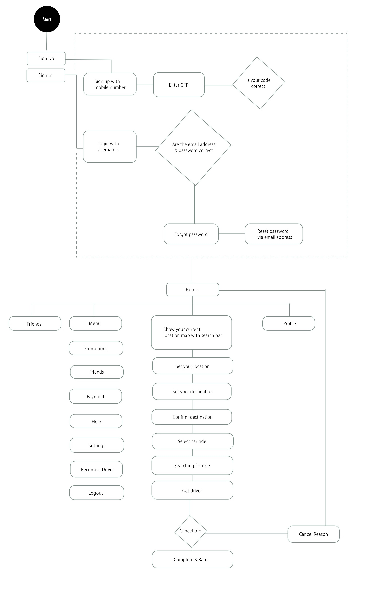
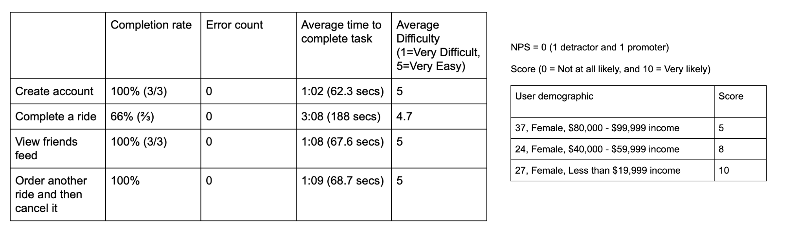

Start-Up
Kat Machin (Designer)
Rhaime Kim (Researcher)
.
3 weeks
Photoshop
Illustrator
Figma
Lead Designer
Ideation
User Research
Prototyping
High-Fidelity design

Nomad Rides is a Y-Combinator backed commission-free ridesharing service. While traditional ridesharing services take 25-50% of fares as commissions, Nomad allows its drivers to keep the entirety of their fares for a small monthly fee of $25. Drivers earn more while riders pay less.
Ride-sharing service that pays 100% of fares to drivers! Nomad Rides centers around creating more economic mobility for its drivers.
How can Nomad rides become a competitive and unique force in the ridesharing industry?
1) Increase user Trust & safety
2) Increase driver compensation
3) Optimize ride selection
Interviews & Surveys
Persona creation
Product sitemap
Survey Method Participants (n=150) Approached potential users in pairs, alternating roles: dialoguer, data collector
| Bio | Goals | Pain Points | |
|---|---|---|---|
| Julia - Rider Age 22 Occupation Student Status Single Location New York |
Likes to attend film festivals. An amateur photographer who likes adventure. Art History major student Does not own a car while in college |
|
- - - - - |
| Bio | Goals | Pain Points | |
|---|---|---|---|
| Sophia - Driver Age 42 Occupation Part-time driver Status married Location New York |
Likes to go on drives with her family.Enjoys small talk. Frequently travels in and out of town. Often on the road picking up and dropping off her kids at school. |
|
|
| Riders | Drivers | |
|---|---|---|
| Who? | |
|
| Needs | |
|
| Problem |
|
|
1) Focus on profile verification
Competitors incentivise government ID verification.
2) Socialization element added to build trust.
3) SOS button for security
Some of the apps use this for added security.
4) More opportunities in non-urban areas
Color Schemes
The color scheme is intended to be impartial yet patriotic
Typeface
Roboto
Light
Regular
Bold
Hypotheses
Test Instructions
Introduction
Imagine you are a college student and you need to book a ride to a destination.
Tasks
1) Sign up and create an account [Success: Yes, No]
2) Order a standard ride and complete a ride [Success: Yes, No]
3) View the friends feed [Success: Yes, No]
4) Order another ride and cancel before driver arrives [Success: Yes, No]
Questions
What frustrates you most about the app?
If you had a magic wand, how would you improve the app?
What did you like about the application?
How likely are you to recommend this site to a friend or colleague
(0=Not at all likely, and 10=Very Likely)?
Data
What I learned
Challenges
Next Steps
Conduct A/B testing with the first prototype using Principle or Invision.